Ce cahier suit le cours chapitre par chapitre. Chaque exercice se fait directement sur la portée : tu choisis une voix, tu cliques pour poser les notes, et les corrections s'affichent au fur et à mesure. Les basses données et les chants donnés se font en plusieurs étapes, chacune se débloque quand la précédente est juste. Ton travail est gardé dans ton navigateur.
Les quatre voix et l'accord parfait
Ces exercices accompagnent le chapitre 1 et le chapitre 2 du cours.
Dans la version web (cahier.html), chaque exercice se fait directement sur la portée, avec les corrections au fur et à mesure. Sur papier, recopie l'énoncé et réalise-le au crayon.
Exercice 1.1 · Accords séparés en Do majeur
Accords séparés (pas d'enchaînement) : le soprano et la basse sont donnés, écris l'alto et le ténor de chaque accord.
Exercice 1.2 · Accords séparés sur une basse en Sol majeur
Accords séparés (pas d'enchaînement) : sur chaque basse, écris l'accord demandé (soprano, alto, ténor), en doublant la fondamentale.
Exercice 1.3 · Accords séparés sur une basse en Fa majeur
Accords séparés (pas d'enchaînement) : sur chaque basse, écris l'accord demandé (soprano, alto, ténor), en doublant la fondamentale.
Exercice 1.4 · Accords séparés sur une basse en Ré majeur
Accords séparés (pas d'enchaînement) : sur chaque basse, écris l'accord demandé (soprano, alto, ténor), en doublant la fondamentale.
Corrigés
Exercice 1.1
Voir le corrigé
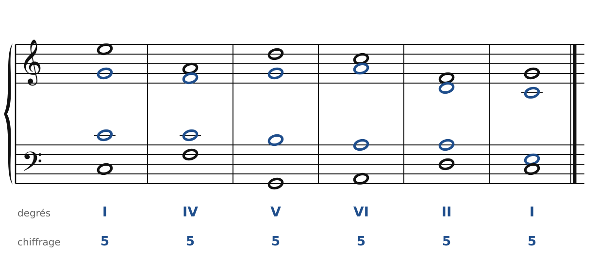
Exercice 1.2 : une solution parmi d'autres.
Voir le corrigé
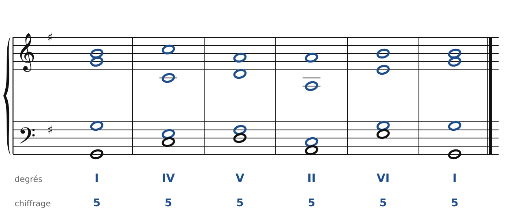
Exercice 1.3 : une solution parmi d'autres.
Voir le corrigé
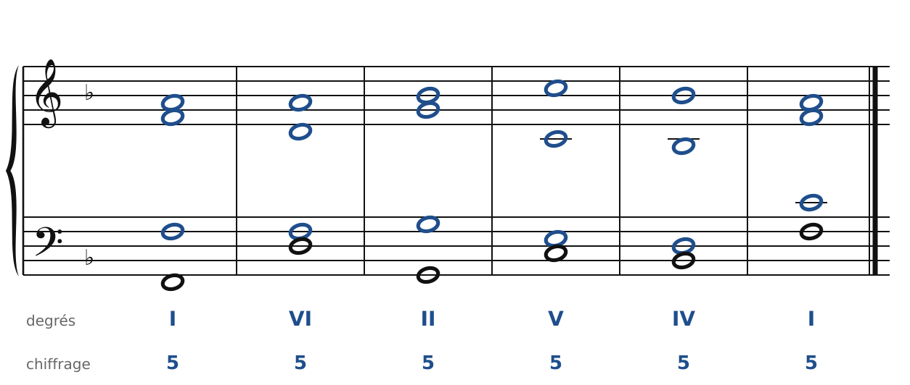
Exercice 1.4 : une solution parmi d'autres.
Voir le corrigé
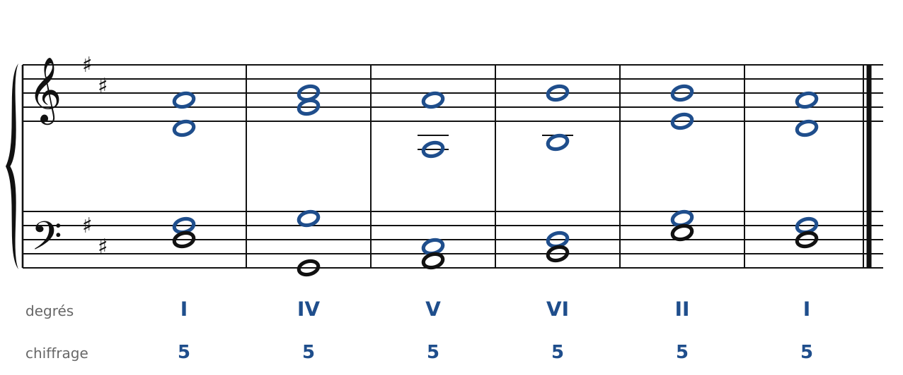
Enchaîner les accords
Ces exercices accompagnent le chapitre 3 du cours.
Dans la version web (cahier.html), chaque exercice se fait directement sur la portée, avec les corrections au fur et à mesure. Sur papier, recopie l'énoncé et réalise-le au crayon.
Exercice 3.1 · Compléter l'alto et le ténor en Do majeur
Le soprano et la basse sont donnés. Écris l'alto et le ténor : garde les notes communes, va au plus près.
Exercice 3.2 · Compléter l'alto et le ténor en Sol majeur
Le soprano et la basse sont donnés. Écris l'alto et le ténor : garde les notes communes, va au plus près.
Exercice 3.3 · Compléter l'alto et le ténor en Fa majeur
Le soprano et la basse sont donnés. Écris l'alto et le ténor : garde les notes communes, va au plus près.
Exercice 3.4 · Compléter l'alto et le ténor en Ré majeur
Le soprano et la basse sont donnés. Écris l'alto et le ténor : garde les notes communes, va au plus près.
Exercice 3.5 · Basse donnée en Do majeur
Basse donnée avec ses degrés : écris le soprano, puis l'alto et le ténor.
Exercice 3.6 · Basse donnée en Sol majeur
Basse donnée avec ses degrés : écris le soprano, puis l'alto et le ténor.
Exercice 3.7 · Basse donnée en Fa majeur
Basse donnée avec ses degrés : écris le soprano, puis l'alto et le ténor.
Exercice 3.8 · Basse donnée en Ré majeur
Basse donnée avec ses degrés : écris le soprano, puis l'alto et le ténor.
Exercice 3.9 · Chasse aux fautes en Do majeur
Cet enchaînement contient trois fautes. Trouve-les et corrige-les en changeant le moins de notes possible (la basse ne bouge pas).
Exercice 3.10 · Chant donné en Do majeur
Chant donné : choisis les accords, écris la basse, puis l'alto et le ténor.
Exercice 3.11 · Chant donné en Sol majeur
Chant donné : choisis les accords, écris la basse, puis l'alto et le ténor.
Corrigés
Exercice 3.1
Voir le corrigé
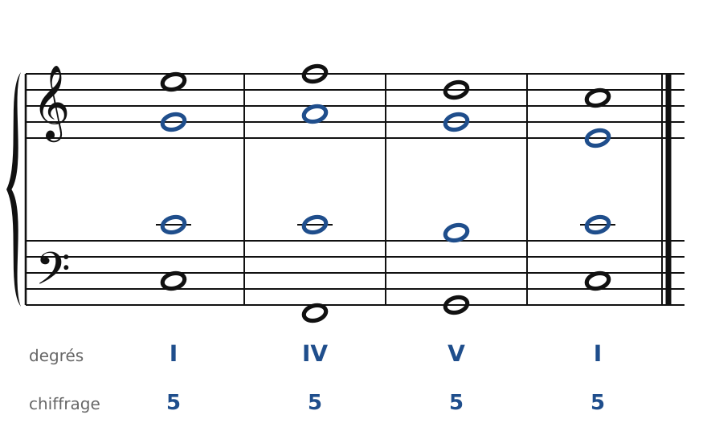
Exercice 3.2
Voir le corrigé
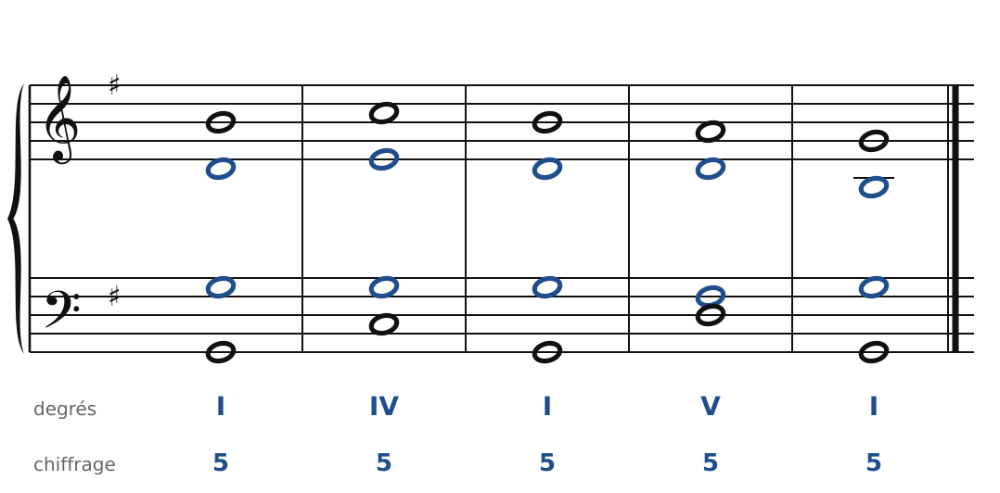
Exercice 3.3
Voir le corrigé
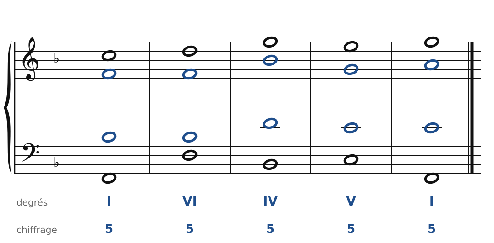
Exercice 3.4
Voir le corrigé
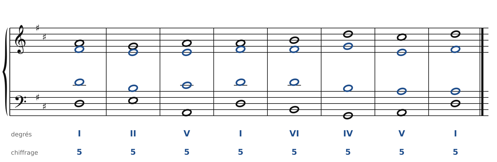
Exercice 3.5 : une solution parmi d'autres.
Voir le corrigé
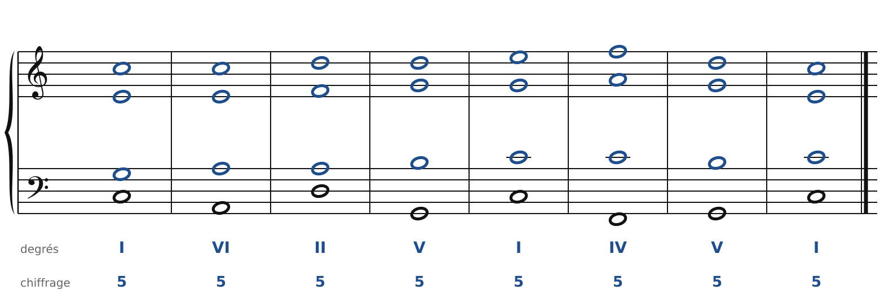
Exercice 3.6 : une solution parmi d'autres.
Voir le corrigé
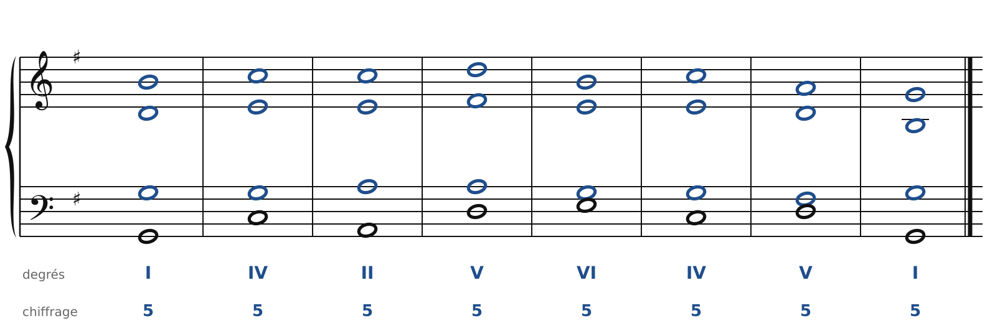
Exercice 3.7 : une solution parmi d'autres.
Voir le corrigé
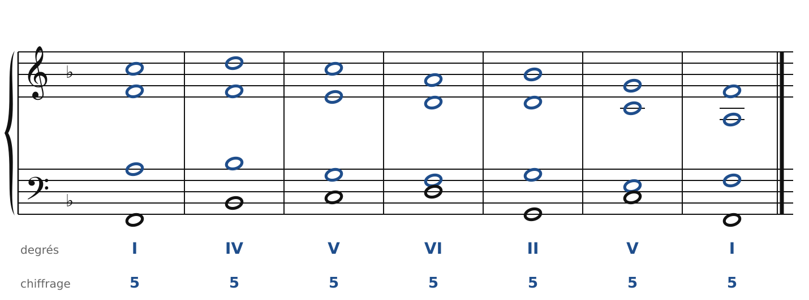
Exercice 3.8 : une solution parmi d'autres.
Voir le corrigé
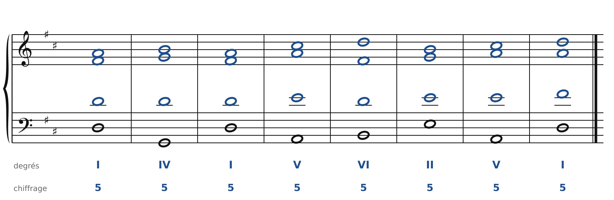
Exercice 3.9 : Accord 5 · tierce absente ; Accord 7 · écart ténor-basse supérieur à la douzième ; Accords 2-3 · 8ve directe soprano/basse (soprano par saut).
Voir le corrigé
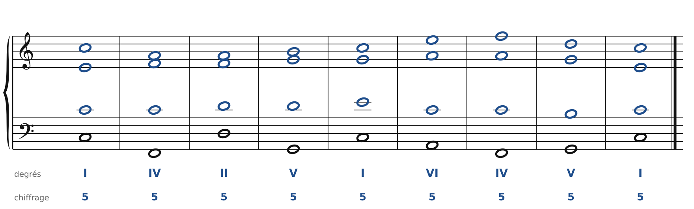
Exercice 3.10 : une solution parmi d'autres.
Voir le corrigé
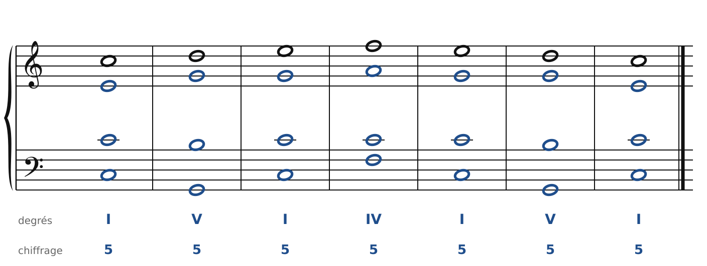
Exercice 3.11 : une solution parmi d'autres.
Voir le corrigé
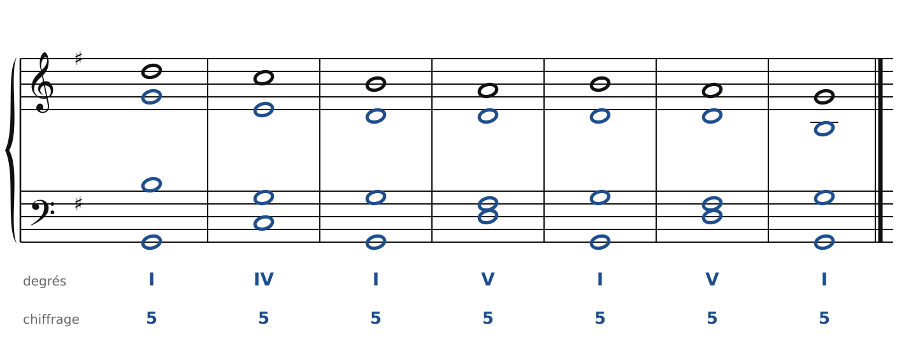
Le premier renversement
Ces exercices accompagnent le chapitre 6 du cours.
Dans la version web (cahier.html), chaque exercice se fait directement sur la portée, avec les corrections au fur et à mesure. Sur papier, recopie l'énoncé et réalise-le au crayon.
Exercice 6.1 · Basse chiffrée en Do majeur
Basse chiffrée : trouve les degrés, écris le soprano, puis l'alto et le ténor.
Exercice 6.2 · Basse chiffrée en Sol majeur
Basse chiffrée : trouve les degrés, écris le soprano, puis l'alto et le ténor.
Exercice 6.3 · Basse chiffrée en Fa majeur
Basse chiffrée : trouve les degrés, écris le soprano, puis l'alto et le ténor.
Exercice 6.4 · Basse chiffrée en Ré majeur
Basse chiffrée : trouve les degrés, écris le soprano, puis l'alto et le ténor.
Exercice 6.5 · Chant donné en Do majeur
Chant donné : choisis les accords, écris la basse, puis l'alto et le ténor.
Exercice 6.6 · Chant donné en Sol majeur
Chant donné : choisis les accords, écris la basse, puis l'alto et le ténor.
Corrigés
Exercice 6.1 : une solution parmi d'autres.
Voir le corrigé
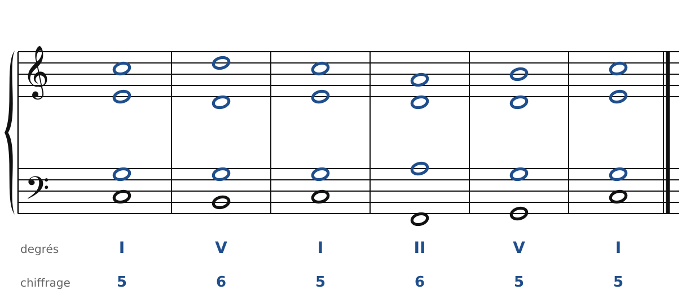
Exercice 6.2 : une solution parmi d'autres.
Voir le corrigé
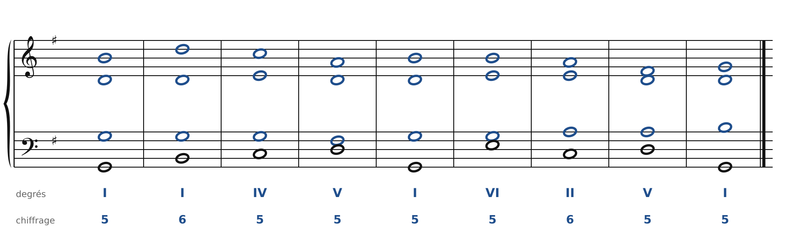
Exercice 6.3 : une solution parmi d'autres.
Voir le corrigé
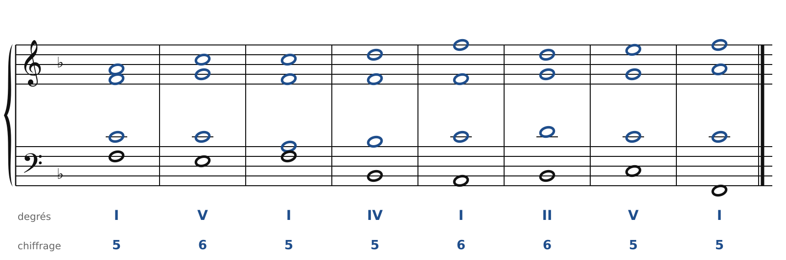
Exercice 6.4 : une solution parmi d'autres.
Voir le corrigé
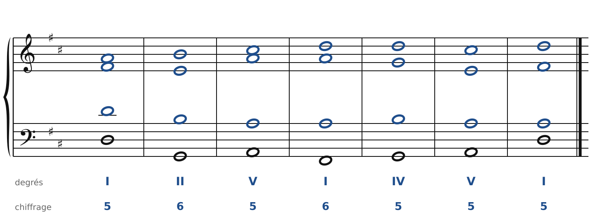
Exercice 6.5 : une solution parmi d'autres.
Voir le corrigé
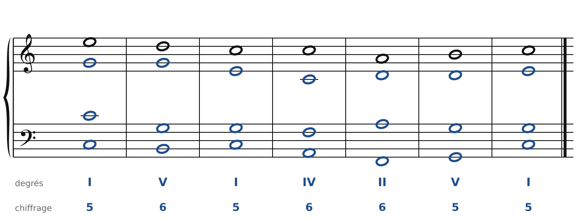
Exercice 6.6 : une solution parmi d'autres.
Voir le corrigé
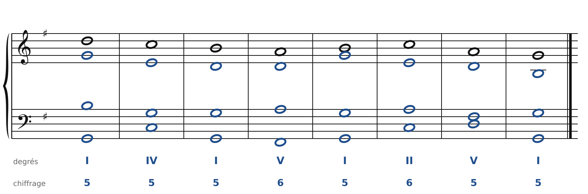
Les cadences
Ces exercices accompagnent le chapitre 7 du cours.
Dans la version web (cahier.html), chaque exercice se fait directement sur la portée, avec les corrections au fur et à mesure. Sur papier, recopie l'énoncé et réalise-le au crayon.
Exercice 7.1 · Basse chiffrée en Do majeur (demi-cadence, puis cadence parfaite)
Basse chiffrée : trouve les degrés, écris le soprano, puis l'alto et le ténor.
Exercice 7.2 · Basse chiffrée en Sol majeur (cadence rompue)
Basse chiffrée : trouve les degrés, écris le soprano, puis l'alto et le ténor.
Exercice 7.3 · Basse chiffrée en Fa majeur (cadence parfaite, puis plagale)
Basse chiffrée : trouve les degrés, écris le soprano, puis l'alto et le ténor.
Exercice 7.4 · Basse chiffrée en Ré majeur (cadence imparfaite, puis parfaite)
Basse chiffrée : trouve les degrés, écris le soprano, puis l'alto et le ténor.
Exercice 7.5 · Chant donné en Do majeur (avec une cadence rompue)
Chant donné : choisis les accords, écris la basse, puis l'alto et le ténor.
Corrigés
Exercice 7.1 : une solution parmi d'autres.
Voir le corrigé
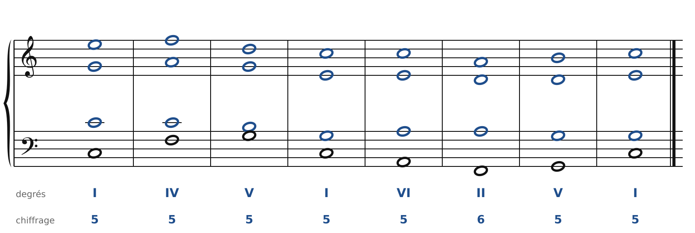
Exercice 7.2 : une solution parmi d'autres.
Voir le corrigé
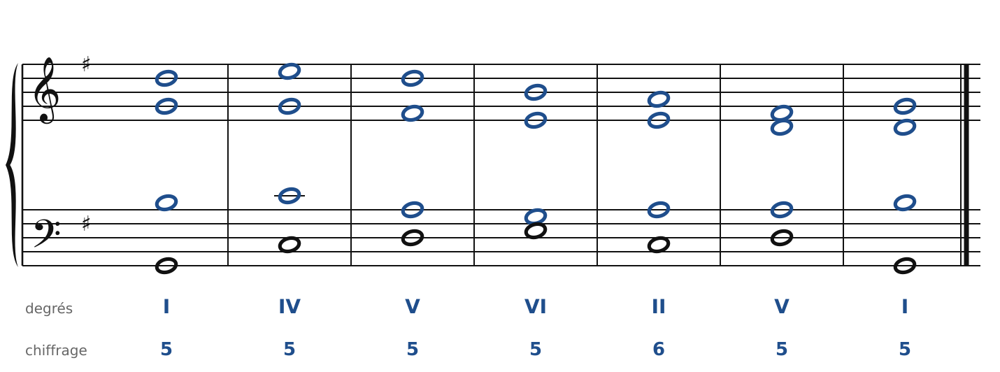
Exercice 7.3 : une solution parmi d'autres.
Voir le corrigé
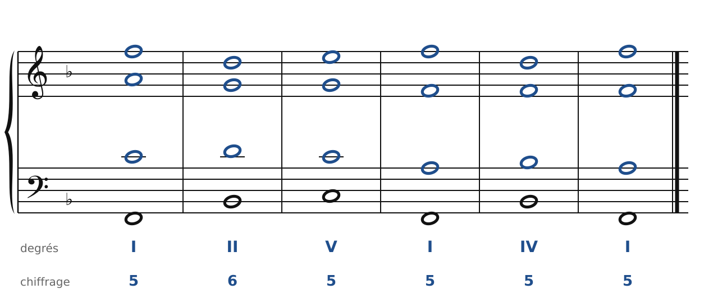
Exercice 7.4 : une solution parmi d'autres.
Voir le corrigé
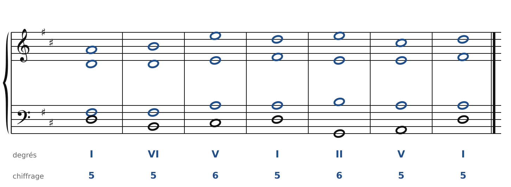
Exercice 7.5 : une solution parmi d'autres.
Voir le corrigé
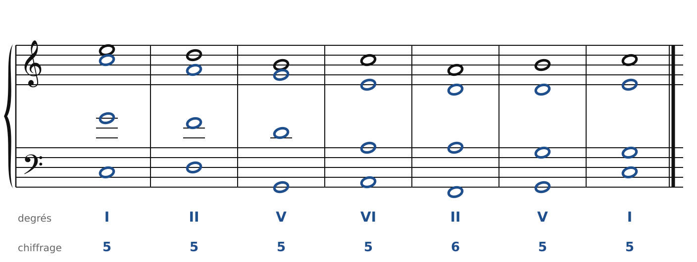
La quarte et sixte
Ces exercices accompagnent le chapitre 8 du cours.
Dans la version web (cahier.html), chaque exercice se fait directement sur la portée, avec les corrections au fur et à mesure. Sur papier, recopie l'énoncé et réalise-le au crayon.
Exercice 8.1 · Basse chiffrée en Do majeur (quarte et sixte de cadence)
Basse chiffrée : trouve les degrés, écris le soprano, puis l'alto et le ténor.
Exercice 8.2 · Basse chiffrée en Sol majeur (de passage et de cadence)
Basse chiffrée : trouve les degrés, écris le soprano, puis l'alto et le ténor.
Exercice 8.3 · Basse chiffrée en Fa majeur (de broderie et de cadence)
Basse chiffrée : trouve les degrés, écris le soprano, puis l'alto et le ténor.
Exercice 8.4 · Basse chiffrée en Ré majeur
Basse chiffrée : trouve les degrés, écris le soprano, puis l'alto et le ténor.
Exercice 8.5 · Chant donné en Fa majeur (avec une quarte et sixte de cadence)
Chant donné : choisis les accords, écris la basse, puis l'alto et le ténor.
Corrigés
Exercice 8.1 : une solution parmi d'autres.
Voir le corrigé
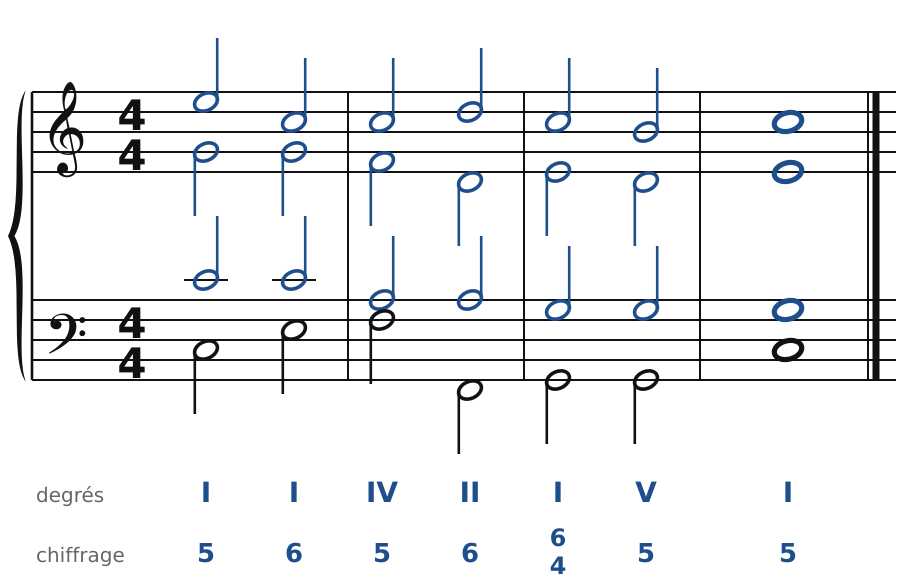
Exercice 8.2 : une solution parmi d'autres.
Voir le corrigé
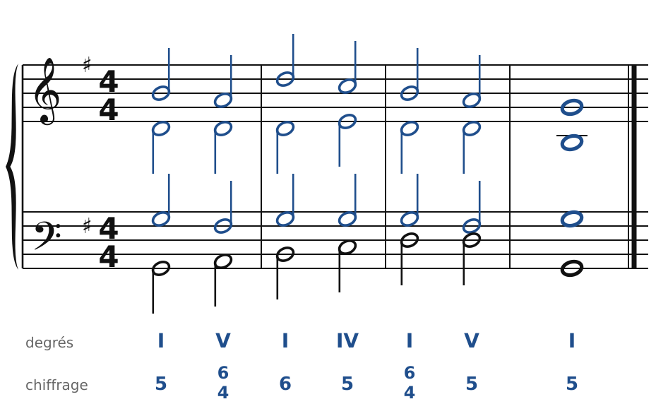
Exercice 8.3 : une solution parmi d'autres.
Voir le corrigé
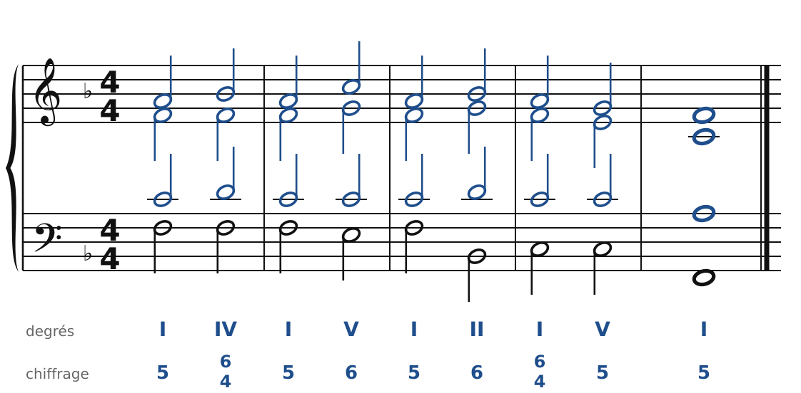
Exercice 8.4 : une solution parmi d'autres.
Voir le corrigé
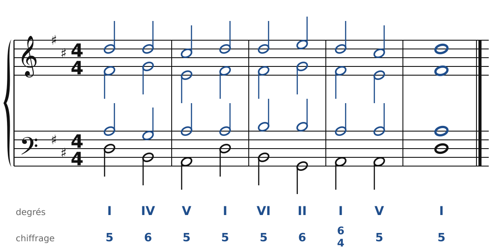
Exercice 8.5 : une solution parmi d'autres.
Voir le corrigé
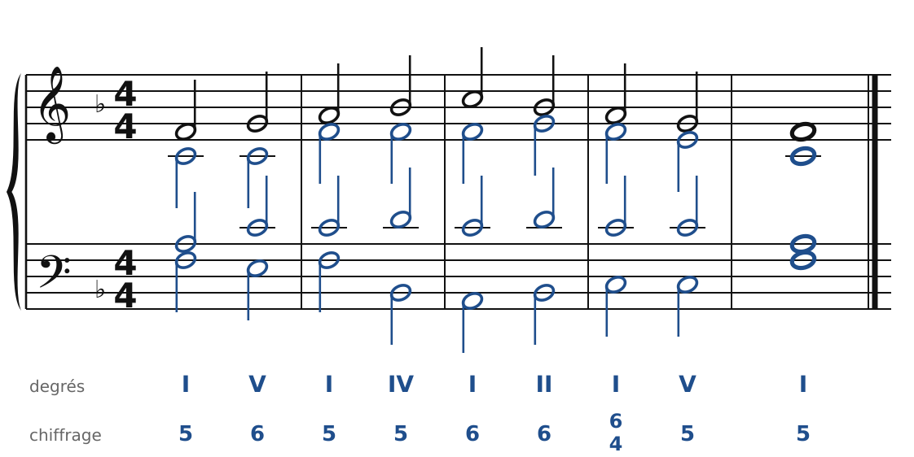
Basses données et chants donnés
Ces exercices accompagnent le chapitre 9 du cours.
Dans la version web (cahier.html), chaque exercice se fait directement sur la portée, avec les corrections au fur et à mesure. Sur papier, recopie l'énoncé et réalise-le au crayon.
Exercice 9.1 · Basse chiffrée en Do majeur
Basse chiffrée : trouve les degrés, écris le soprano, puis l'alto et le ténor.
Exercice 9.2 · Chant donné en Do majeur
Chant donné : choisis les accords, écris la basse, puis l'alto et le ténor.
Exercice 9.3 · Basse chiffrée en Sol majeur
Basse chiffrée : trouve les degrés, écris le soprano, puis l'alto et le ténor.
Exercice 9.4 · Basse chiffrée en Fa majeur
Basse chiffrée : trouve les degrés, écris le soprano, puis l'alto et le ténor.
Exercice 9.5 · Chant donné en Sol majeur
Chant donné : choisis les accords, écris la basse, puis l'alto et le ténor.
Exercice 9.6 · Chant donné en Fa majeur
Chant donné : choisis les accords, écris la basse, puis l'alto et le ténor.
Exercice 9.7 · Chant donné en Ré majeur
Chant donné : choisis les accords, écris la basse, puis l'alto et le ténor.
Corrigés
Exercice 9.1 : une solution parmi d'autres.
Voir le corrigé
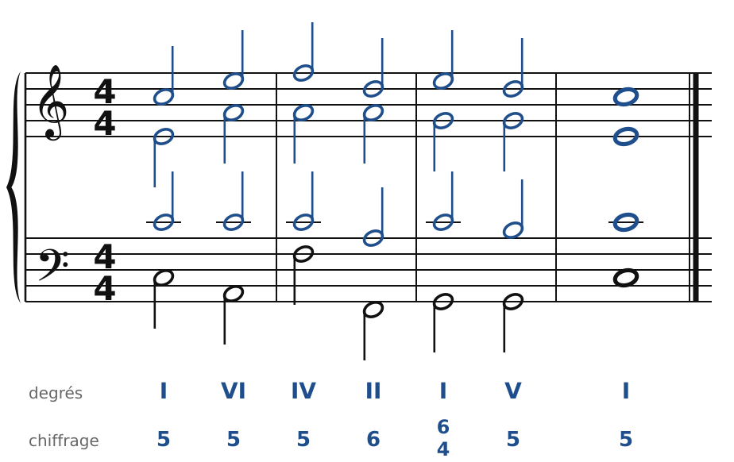
Exercice 9.2 : une solution parmi d'autres.
Voir le corrigé
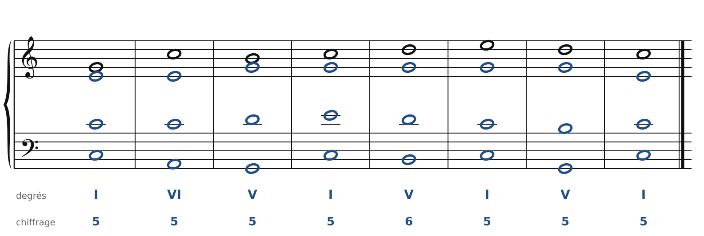
Exercice 9.3 : une solution parmi d'autres.
Voir le corrigé
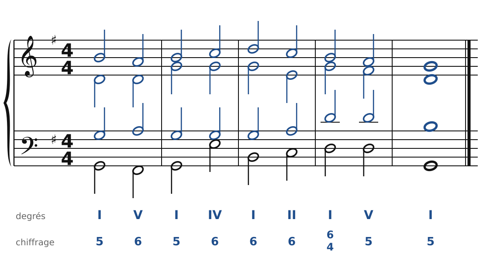
Exercice 9.4 : une solution parmi d'autres.
Voir le corrigé
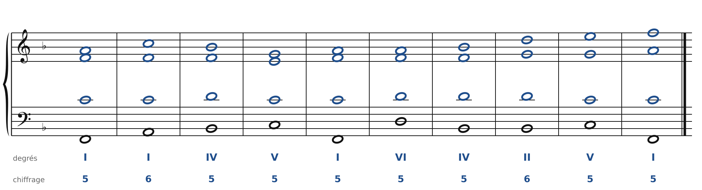
Exercice 9.5 : une solution parmi d'autres.
Voir le corrigé
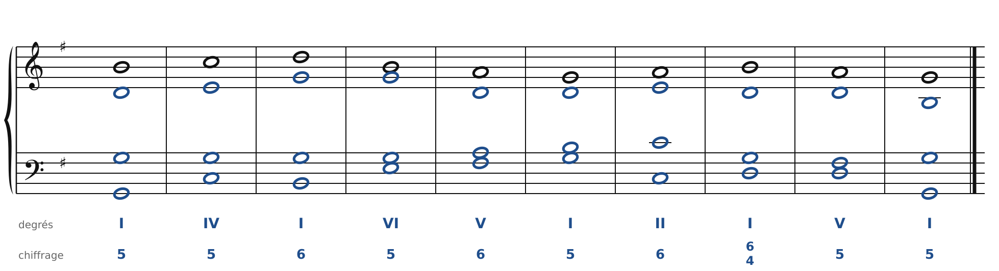
Exercice 9.6 : une solution parmi d'autres.
Voir le corrigé
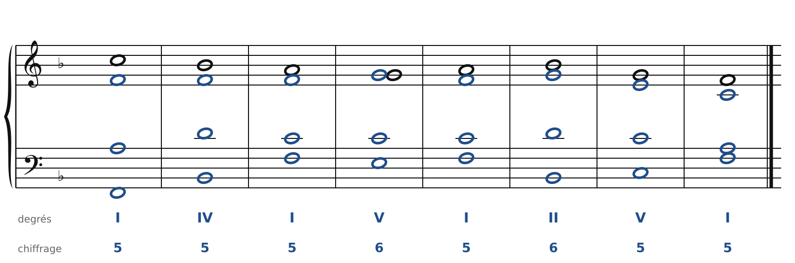
Exercice 9.7 : une solution parmi d'autres.
Voir le corrigé
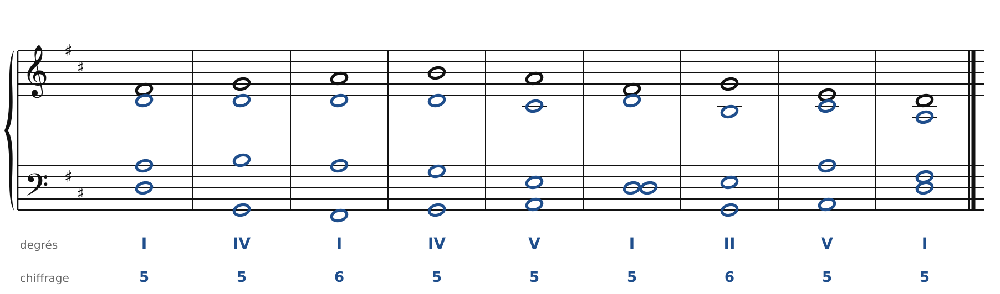
Le mode mineur
Ces exercices accompagnent le chapitre 10 du cours.
Dans la version web (cahier.html), chaque exercice se fait directement sur la portée, avec les corrections au fur et à mesure. Sur papier, recopie l'énoncé et réalise-le au crayon.
Exercice 10.1 · Basse chiffrée en la mineur
Basse chiffrée : trouve les degrés, écris le soprano, puis l'alto et le ténor.
Exercice 10.2 · Basse chiffrée en mi mineur
Basse chiffrée : trouve les degrés, écris le soprano, puis l'alto et le ténor.
Exercice 10.3 · Basse chiffrée en ré mineur
Basse chiffrée : trouve les degrés, écris le soprano, puis l'alto et le ténor.
Exercice 10.4 · Chant donné en la mineur
Chant donné : choisis les accords, écris la basse, puis l'alto et le ténor.
Exercice 10.5 · Chant donné en sol mineur
Chant donné : choisis les accords, écris la basse, puis l'alto et le ténor.
Exercice 10.6 · Chant donné en mi mineur
Chant donné : choisis les accords, écris la basse, puis l'alto et le ténor.
Corrigés
Exercice 10.1 : une solution parmi d'autres.
Voir le corrigé
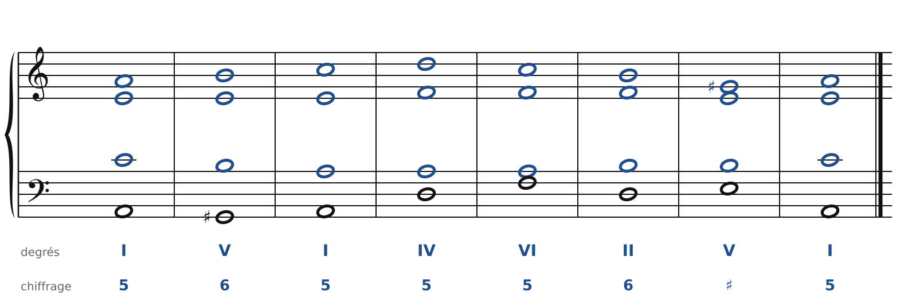
Exercice 10.2 : une solution parmi d'autres.
Voir le corrigé
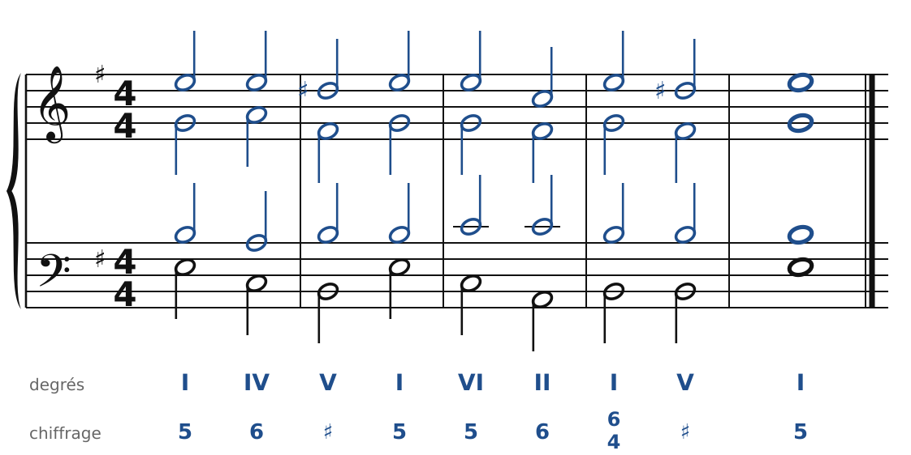
Exercice 10.3 : une solution parmi d'autres.
Voir le corrigé
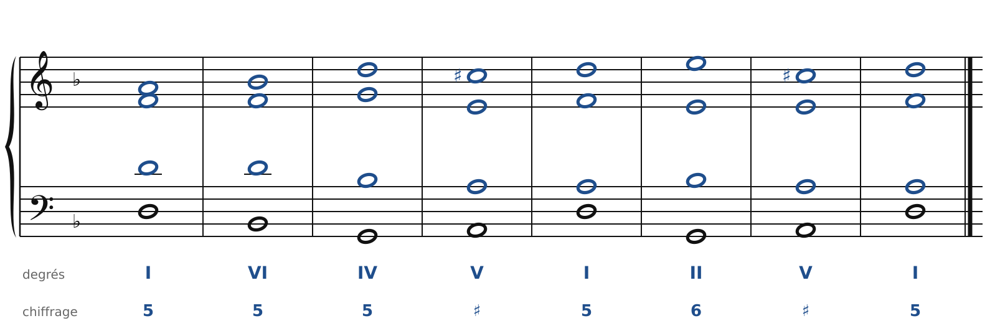
Exercice 10.4 : une solution parmi d'autres.
Voir le corrigé
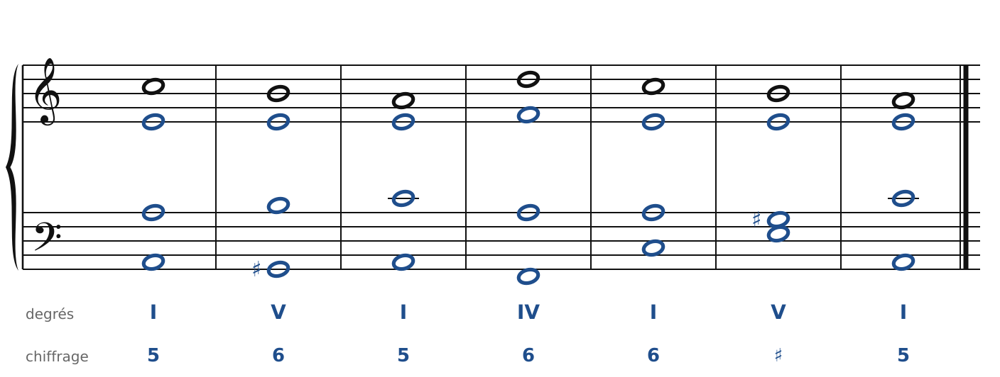
Exercice 10.5 : une solution parmi d'autres.
Voir le corrigé
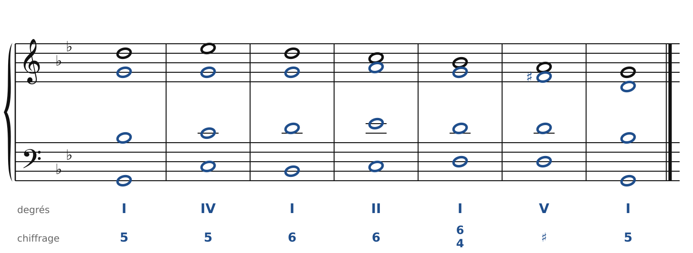
Exercice 10.6 : une solution parmi d'autres.
Voir le corrigé
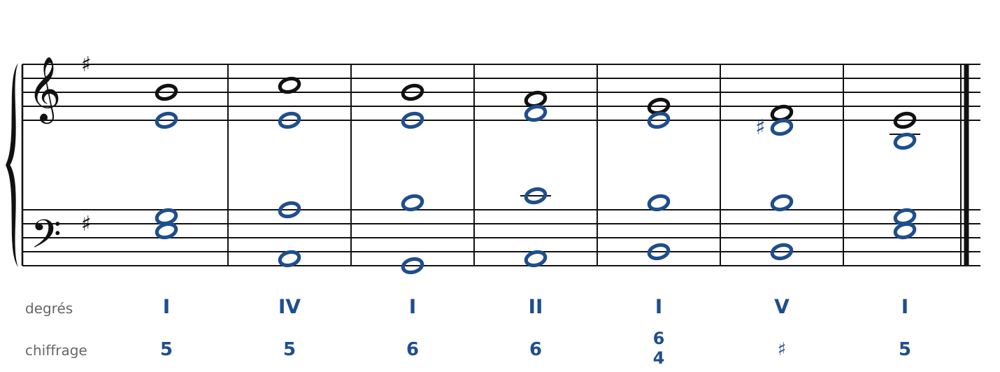
Le choral : notes étrangères et harmonisation
Ces exercices accompagnent les chapitres 13, 14 et 15 du cours.
Dans la version web (cahier.html), on écrit directement sur la portée. Pour écrire deux croches, sélectionne une note et clique sur ♪♪ croches ; pour préparer un retard, clique sur ⁀ lier. Les notes étrangères reconnues s'affichent en vert (p, b, r…), celles qui sont mal traitées en rouge.
Exercice 13.1 · Orner une phrase en Do majeur (notes de passage)
Ajoute des notes étrangères à cette phrase écrite en noires : au moins 3 note de passages. Ne change pas les accords, et ne crée ni quinte ni octave consécutive.
Exercice 13.2 · Orner une phrase en Ré majeur (passages et broderie)
Ajoute des notes étrangères à cette phrase écrite en noires : au moins 3 note de passages, 1 broderie. Ne change pas les accords, et ne crée ni quinte ni octave consécutive.
Exercice 13.3 · Orner une phrase en Fa majeur (un retard à la cadence)
Ajoute des notes étrangères à cette phrase écrite en noires : au moins 1 retard, 3 note étrangères. Ne change pas les accords, et ne crée ni quinte ni octave consécutive.
Exercice 13.4 · Orner une phrase en la mineur (en la mineur)
Ajoute des notes étrangères à cette phrase écrite en noires : au moins 3 note étrangères. Ne change pas les accords, et ne crée ni quinte ni octave consécutive.
Exercice 13.5 · Harmoniser une mélodie de choral en Do majeur
Un accord par temps : choisis les accords, écris la basse, puis l'alto et le ténor en noires, puis ajoute au moins deux notes de passage.
Exercice 13.6 · Harmoniser une mélodie de choral en Sol majeur
Un accord par temps : choisis les accords, écris la basse, puis l'alto et le ténor en noires, puis ajoute au moins deux notes de passage.
Exercice 13.7 · Harmoniser une mélodie de choral en Ré majeur
Un accord par temps : choisis les accords, écris la basse, puis l'alto et le ténor en noires, puis ajoute au moins deux notes de passage.
Exercice 13.8 · Harmoniser une mélodie de choral en Fa majeur
Un accord par temps : choisis les accords, écris la basse, puis l'alto et le ténor en noires, puis ajoute au moins deux notes de passage.
Exercice 13.9 · Harmoniser une mélodie de choral en la mineur
Un accord par temps : choisis les accords, écris la basse, puis l'alto et le ténor en noires, puis ajoute au moins deux notes de passage.
Exercice 13.10 · Harmoniser une mélodie de choral en ré mineur
Un accord par temps : choisis les accords, écris la basse, puis l'alto et le ténor en noires, puis ajoute au moins deux notes de passage.
Corrigés
Exercice 13.1 : une solution parmi d'autres.
Voir le corrigé
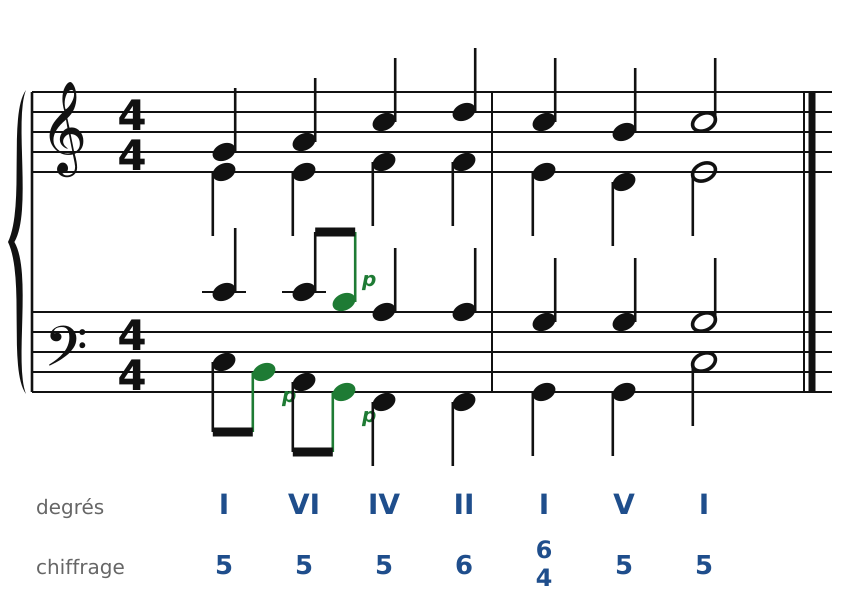
Exercice 13.2 : une solution parmi d'autres.
Voir le corrigé
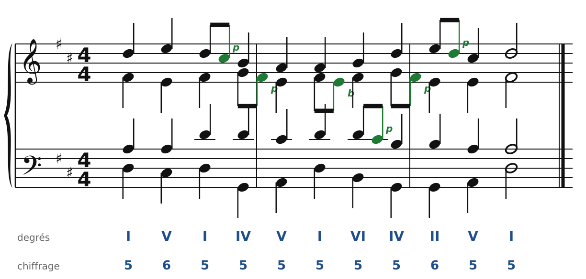
Exercice 13.3 : une solution parmi d'autres.
Voir le corrigé
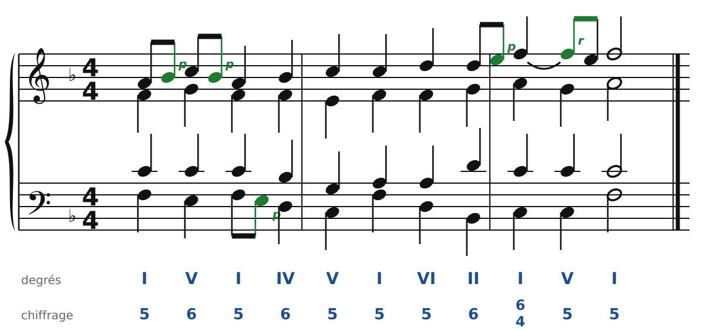
Exercice 13.4 : une solution parmi d'autres.
Voir le corrigé
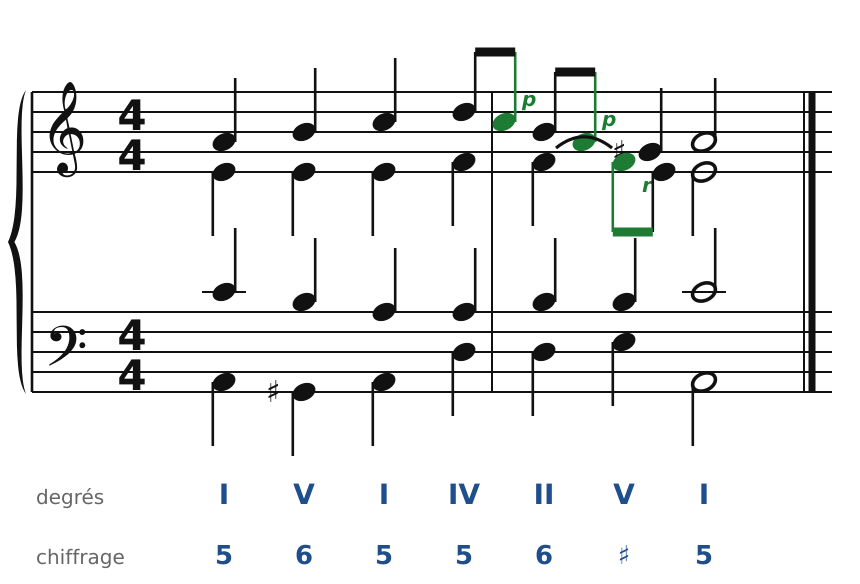
Exercice 13.5 : une solution parmi d'autres.
Voir le corrigé
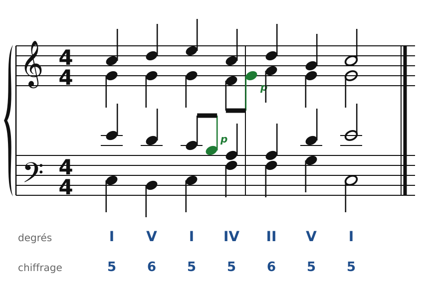
Exercice 13.6 : une solution parmi d'autres.
Voir le corrigé
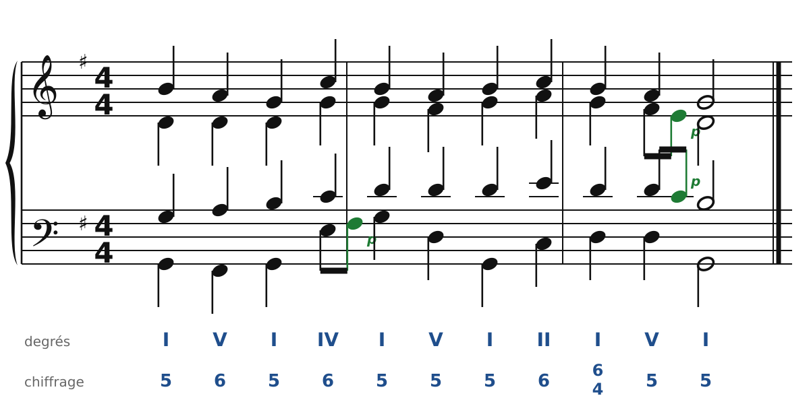
Exercice 13.7 : une solution parmi d'autres.
Voir le corrigé
Exercice 13.8 : une solution parmi d'autres.
Voir le corrigé
Exercice 13.9 : une solution parmi d'autres.
Voir le corrigé
Exercice 13.10 : une solution parmi d'autres.